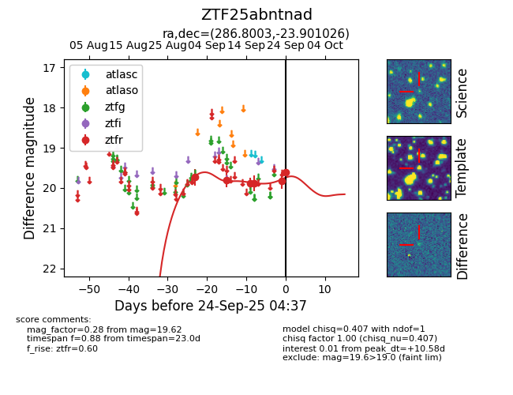
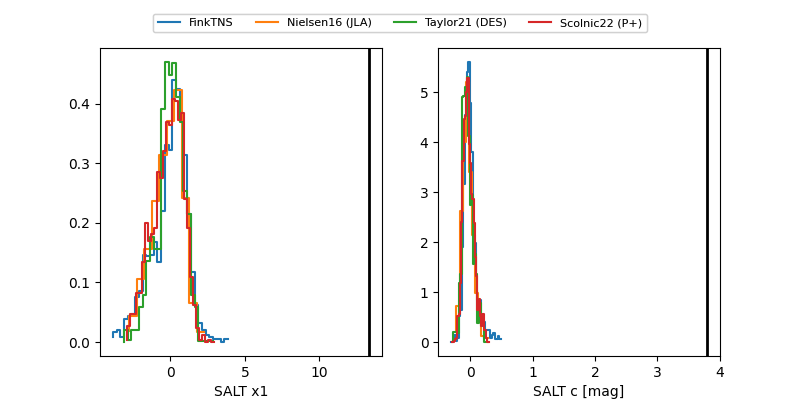

FINK: ZTF25abntnad
Lasair: ZTF25abntnad
ALeRCE: ZTF25abntnad
ZTF25abntnad (ztf,fink)
equatorial (ra, dec) = (286.8003,-23.90103)
galactic (l, b) = (12.9340,-13.92584)


last ztfr=19.62
6 ztfr detections